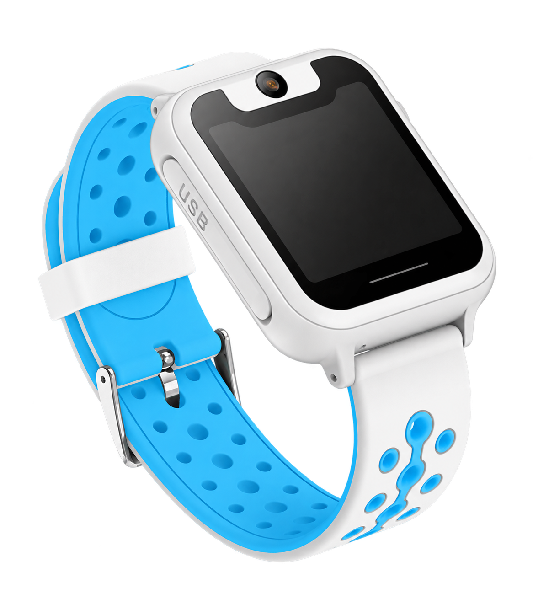
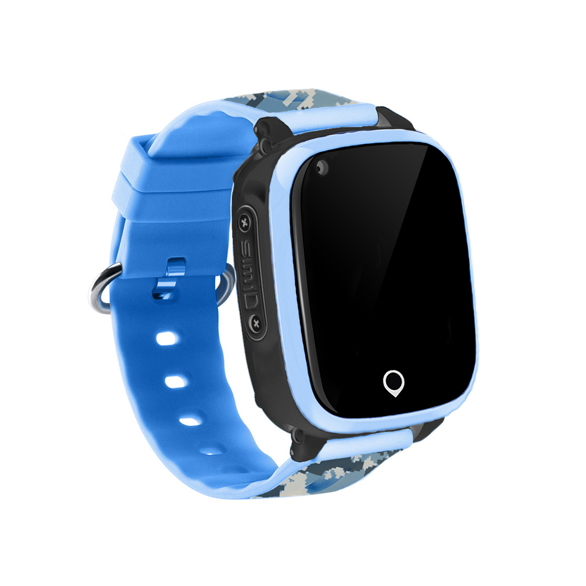

最先看见什么？
位置、设备状态和功能入口同时出现，重要信息需要更明确的阅读顺序。
设计目标孩子状态，优先呈现
陪伴，有迹可循。STAY CLOSE, GROW
FREE

THE CONTEXT
手表在孩子腕间，牵挂在家长心里。我们把这份连接，整理成更清楚、更亲切的日常体验。
以儿童手表家长端为设计对象，重新组织位置守护、亲子沟通、作息与提醒等页面，呈现一套更亲切、清晰的移动端 UI 语言。
位置、沟通与成长，清楚呈现。

THE CHALLENGE
从家长的日常任务出发，重新分配界面的注意力。
位置、设备状态和功能入口同时出现，重要信息需要更明确的阅读顺序。
联系孩子、设置围栏、安排上学时段各有路径，需要具体的操作名称与反馈。
童趣面向情感，清晰服务家长。颜色与圆角需要帮助理解，而非增加干扰。
THE BIG PICTURE
从一个首页，连接白天的探索、夜晚的休息，以及需要特别关注的时刻。
孩子资料 · 位置摘要 · 手表状态
THE DESIGN APPROACH
位置同时呈现更新时间和定位方式；设备连接、电量等信息独立标识，避免把一个坐标理解为全部情况。
位置与地图为设计示意
查看位置、联系孩子等高频操作靠前；管理设置按任务分组，用明确的动作名称减少反复寻找。
柔和底色、圆润容器与轻巧插画建立亲切感；正文、时间和操作仍采用稳定的层级和对比。
MOMENTS THAT MATTER
沿着家长的一天，看看视觉与信息如何一起工作。
位置守护
把位置与时间放在一起，帮助家长理解当前看到的信息。围栏设置独立呈现范围与启用状态。
位置、更新时间、定位方式构成同一组摘要；地图作为上下文，主要动作保留在易找的位置。
亲子沟通
让联系回到熟悉的对话方式。家庭消息与手表联系人分开管理，交流和设置各有清楚的位置。
对话使用明确的发送方和语音时长；联系人以姓名与关系组织，减少纯号码带来的识别负担。
上学设置
把免打扰从一个模糊开关，展开为可读的生效时间与重复规则，方便家长核对设置。
时段、重复日与启用状态保持邻近；设备页集中展示连接、电量与管理入口。
成长记录
用清楚的数字和轻快的图形，呈现孩子的日常活动。首页负责概览，记录页承接更细的阅读。
主数字、单位与日期明确分层；目标进度与每日变化分开展示，让鼓励温和而具体。
夜晚与作息
把睡眠时长、日期和变化放在同一阅读链路中；定时开关机则独立展示设备作息，让记录与设置各自清楚。
睡眠采用低饱和夜蓝建立场景感，数字保留小时与分钟；开机、关机时段并排对照，同时说明关机期间的功能限制。
提醒与应急
日程提醒帮助安排日常，SOS 与预警承接需要家长关注的信息。不同紧急程度，使用不同的阅读节奏。
提醒按日期与时间组织；预警突出事件类型、发生时间与处理状态，并将联系动作放在事件附近。珊瑚色只用于需要关注的信息。
A FRIENDLY DESIGN LANGUAGE
用颜色、字体、间距和组件，让不同场景说同一种语言。
中文采用苹方 / 微软雅黑；数字与单位建立明确主次，信息不靠颜色单独表达。
标题与内容
状态与说明
以 4 为基础的间距节奏；更大的组间距区分任务，圆角容器承接相关信息。
颜色配合文字，明确状态与时间。
动词与对象一起出现，知道下一步做什么。
对象、摘要与操作各占稳定的位置。
时间、事项、重复规则在同一组，便于核对提醒是否符合日常安排。
事件类型和处理状态明确表达，紧急信息不过度依赖颜色；联系入口与事件相邻。
✳ THE COMPLETE INTERFACE FAMILY
从孩子首页延伸到守护、沟通、作息、成长和设备管理。界面各有任务，却共享同样的色彩、组件和阅读节奏。
孩子的位置、熟悉的范围与需要被看见的提醒
从一句问候到家人共同守护，联系始终有温度
上课、提醒、睡眠与开关机规则，顺着生活安排
活动记录与设备状态一并纳入清楚的界面系统
ALL THE LITTLE DETAILS
用同一种温柔而清楚的设计语言，连接不同的日常。
从位置、沟通到睡眠与日程，用同一套亲切而清楚的界面语言，连接孩子与家长。